AMR - NoC Configuration¶
Network-On-Chip (NoC) Overview¶
AMD Versal™ devices are designed around a programmable NoC interconnect based on AXI-4, which provides high bandwidth, long distance, communication throughout the device. NoC connections simplify the timing requirements needed when programmable logic creates a resource burden through congested logic, cross one or more SLRs, or connect to the opposite side of the device die. AMR is a three super logic region (SLR) device. Each SLR contains two Horizontal NoCs (HNoC) and four Vertical NoCs (VNoC), which connect to each other. The two HNoCs are located on the top and bottom of each SLR and span the entire width of the SLR. In addition to connecting to the VNoCs, the bottom HNoC also connects to the CIPS and DDRs. The top HNoC in SLR2 is optimized for connecting to the HBM. The four VNoCs in each SLR span the entire height of the SLR, and connect to adjacent SLRs. Connections to and from the NoC are made with the NoC packet switches (NPS). An illustration of the NoC is provided below. It illustrates the NoC resources (NMU, NSU, VNoC, HNoC, DDRMC, HBM MCs, HBM NMUs etc). Additional Information on NoC can be found in the Additional Resources section.
NoC Components¶
NoC Master Units (NMU)¶
Versal HBM series devices contain NMU_512, NMU_128, and HBM_NMU connections to the NoC. These are described in more detail below.
https://docs.xilinx.com/r/en-US/pg313-network-on-chip/NoC-Master-Unit
NMU_512¶
This is a full featured NoC master unit (NMU). It allows AXI masters in the PL to connect to the Vertical NoC. For memory mapped interfaces, the data width of the NMU can be configured from 32-bits to 512-bits. For AXI4-Stream interfaces, the data width of the NMU can be configured from 128-bits to 512-bits.
https://docs.xilinx.com/r/en-US/pg313-network-on-chip/NMU512-PL
HBM_NMU¶
HBM_NMU are used to fully utilize the HBM bandwidth by providing direct access from the PL to the HBM. These NMU are distributed evenly across the top of SLR2 to help ease timing closure. The data width of the HBM_NMU is configurable from 32-bits to 256-bits. It does not support the AXI4-Stream protocol.
https://docs.xilinx.com/r/en-US/pg313-network-on-chip/HBM_NMU
NMU_128¶
These NMUs are optimized for the low latency requirements of the hardened blocks, such as CIPS. It has a fixed 128-bit AXI data width. It does not support the AXI4-Stream protocol or master-defined destination IDs.
https://docs.xilinx.com/r/en-US/pg313-network-on-chip/NMU128-Low-Latency
NoC Slave Units (NSU)¶
Versal HBM series devices contain NSU_512, NSU_128, DDRMC_NSU, and HBM_NSU connections to the NoC. These are described in more detail below.
https://docs.xilinx.com/r/en-US/pg313-network-on-chip/NoC-Slave-Unit
NSU_512¶
This is a full featured NoC slave unit (NSU). It allows Vertical NoC connections to AXI slaves in the PL. For memory mapped interfaces, the data width of the NSU can be configured from 32-bits to 512-bits. For AXI4-Stream interfaces, the data width of the NSU can be configured from 128-bits to 512-bits.
https://docs.xilinx.com/r/en-US/pg313-network-on-chip/NSU512-PL
NSU_128¶
These NSUs are optimized for the low latency requirements of the hardened blocks, such as CIPS. It has a fixed 128-bit AXI data width. It does not support the AXI4-Stream protocol.
https://docs.xilinx.com/r/en-US/pg313-network-on-chip/NSU128-Low-Latency
DDRMC_NSU¶
Each port of a DDRMC has a partial NSU (DDRMC_NSU). It converts the NoC packet domain to the memory controller domain without first converting it to the AXI protocol.
https://docs.xilinx.com/r/en-US/pg313-network-on-chip/DDRMC-NSU
HBM_NSU¶
Each pseudo channel of the HBM has two NSU (HBM_NSU). It converts the NoC packet domain to the HBM controller domain without first converting it to the AXI protocol.
https://docs.xilinx.com/r/en-US/pg313-network-on-chip/HBM_NSU
AMR V80 NoC Overview¶
AXI NoC Instantiations¶
AMR uses multiple AXI NoC IP instantiations to connect AXI and Inter-NoC interconnect (INI) interfaces to the NoC. This allows the host and RPU to interface with the PL, HBM, DDR, and DIMM through CIPS.
The configuration of each AXI NoC instantiation is described below.
-
NoC to PL AXI connections (M00_AXI, M01_AXI) to allow the PCIe® Host to access PL address space (PF0: 16MB management space, PF1: test GPIO).
INI connections to allow the PCIe Host to access the DDR and DIMM MCs via DMA.
INI connections to allow the Platform Management Controller (PMC) access to the DDR and DIMM MCs.
INI connection to allow the RPU to access the DDR MC.
-
INI connection to allow the CIPS to connect to the DDR MC. Only two of the four MC ports are used.
-
INI connections to allow the CIPS to connect to the DIMM MC (ports 0 and 1).
AMR does not use the PS APUs, but if they were used, the AXI NoC IP could be configured to support these connections. Additional connections could also be made to the PL and memory controllers (MC).
AXI NoC Performance¶
System performance depends on the NoC, DDR, DIMM, and HBM performance. There are various sources of overhead in the NoC which degrade the theoretical maximum bandwidth of a NoC NMU (NoC master unit) or NSU (NoC slave unit). These include contention, the amount of mixed traffic (rd% vs wr%), read address, write response packets, the number of NMUs/NSUs on each VNoC/HNoC and their requested QoS. To aid in the NoC configuration of routing and resources used, the Versal NoC compiler requires a traffic specification. The traffic specification consists of the NoC connections and the quality of service (QoS) requirements. QoS has two components:
Traffic Class: This defines how traffic on the connection is prioritized in the NoC compiler and in the hardware. The traffic class must be set on the NMU and is used for all paths from that NMU. Normally, the best effort class is chosen, but other options are available. AMR uses ‘Best Effort’ for all its NoC settings. With this setting, the NoC compiler will work to satisfy the BW and latency requirements of all low latency and Isochronous paths first. Then after those requirements have been met, the NoC compiler will work to satisfy the BW and latency requirements with paths using best effort. With the ‘Best Effort’ setting, AMR is able to meet its requirements.
Low latency: typically CPU to DDR memory transactions.
Isochronous: real-time deadlines.
Best effort: bulk transfers and not time critical. This is also the only available option for the HBM Read and Write traffic class.
Bandwidth requirements: This describes how much bandwidth is required in each direction (rd/wr). These requirements are associated with the slave ports. Each slave port can have a separate bandwidth requirement setting.
In addition to creating the traffic specification, the DDR MC and HBM Controllers may need to be tuned to optimize performance by modifying the MC address mapping. A description of the HBM optimizations are documented in HBM Configuration and the DIMM optimizations are documented in DDR Address Mapping for axi_noc_mc_ddr4_1.
Additional information on the NoC, NoC performance, and performance tuning can be found in the Additional Resources section.
NoC Resources¶
Available NMU & NSU¶
The table below shows the total number of NMU and NSU in the Versal device.
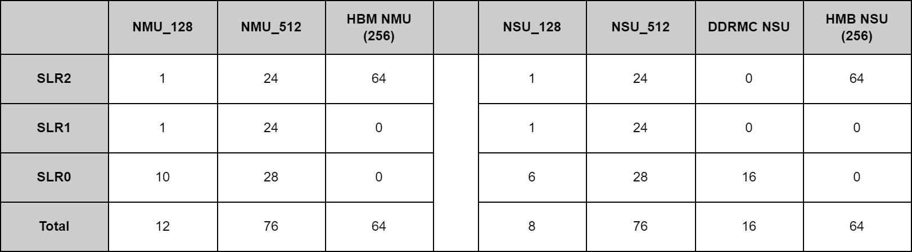
CIPS-Specific NMU & NSU¶
All NMU_128 and NSU_128 connect to CIPS. The main CIPS core is located in SLR0 and it has multiple NoC connections which include PCIe, PMC, RPU, cache coherent, and Non-cache coherent. In V80, there is also a CIPS core in SLR1 and SLR2. Each of these CIPS cores have one PMC_NMU and one PMC_NSU connection to it.
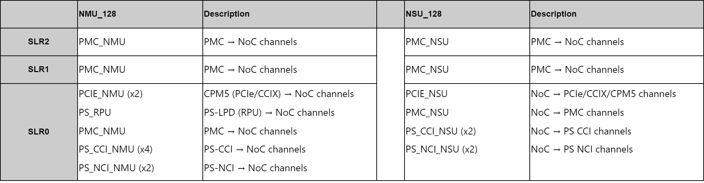
NCI: Non-cache coherent interconnect
CCI: Cache coherent interconnect
https://docs.xilinx.com/r/en-US/pg352-cips/PS-NoC-Interfaces
AMR NMU & NSU Usage¶
The following table shows the total number of NMU and NSU used by AMR.
*There are four DDRMC controllers, but AMR only uses two. The DDR uses two DDRMC NSU and the DIMM uses two DDRMC NSUs.
A break down of the different NMU and NSU connections are given in the following tables.
The host uses multiple connections (CPM_PCIE_NOC_0 and CPM_PCIE_NOC_1) to access PL slaves, the DDR, and the DIMM for more optimal performance.
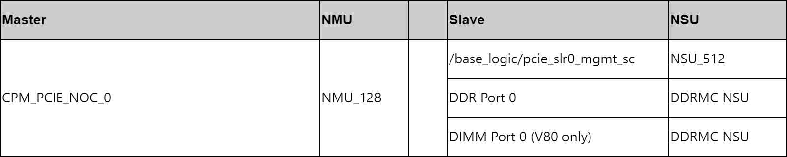
The host uses multiple connections (CPM_PCIE_NOC_0 and CPM_PCIE_NOC_1) to access PL slaves, the DDR, and the DIMM for more optimal performance.
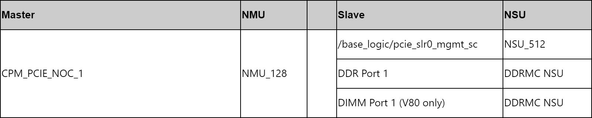
The PMC connects to the DDR and DIMM to manage primary pre-boot tasks and management of the hardware for reliable power-up and power-down of device resources.
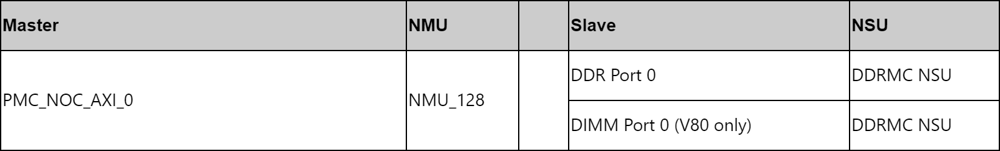
The host and RPU, which operates in the LPD, communicate through the use of the DDR.
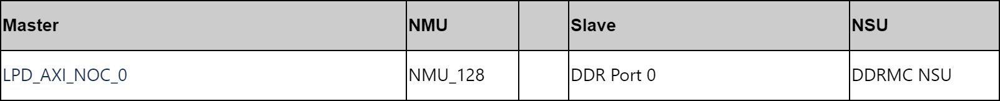
CPM_PCIE_NOC_0 and CPM_PCIE_NOC_1 connect to HBM_MC ports to exercise the NoC and HBM performance.
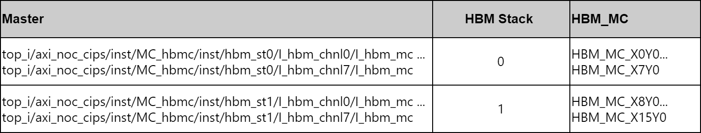
Additional connections can be made to the NoC and memory ports as required by other designs. As more connections are made, additional tuning to the NoC components and DIMM/HBM addressing may be required for optimum performance.
Additional Resources¶
More information about the NoC can be found here:
https://docs.xilinx.com/r/en-US/pg313-network-on-chip/Versal-Programmable-NoC-Overview
https://docs.xilinx.com/r/en-US/pg313-network-on-chip/Configuring-the-AXI-NoC
The physical link raw BW information can be found here:
The peak expected bandwidths for AMR with different read/write ratios can be found here:
If more information is needed for more advanced NoC performance tuning, it can be found here:
AXI NoC CIPS Configurations¶
AXI NoC CIPS (axi_noc_cips)¶
The axi_noc_cips block connects the CIPS to the PL logic and memory controllers through NoC connections. The port connections and configuration of this block are described below.

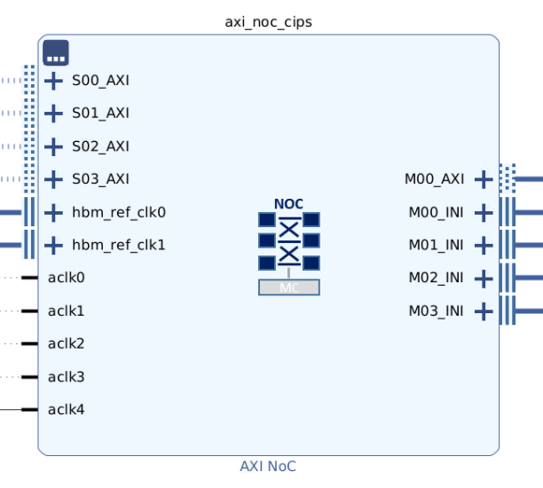
GUI Configuration of axi_noc_cips¶
For AMR, the NoC configuration changes are described below. More documentation can be found at https://docs.xilinx.com/r/en-US/pg313-network-on-chip/Configuring-the-AXI-NoC.
General¶
The general tab allows the number of AXI master and slave interfaces, INI master and slave interfaces, and integrated memory controller connections to be specified. The settings are explained below.

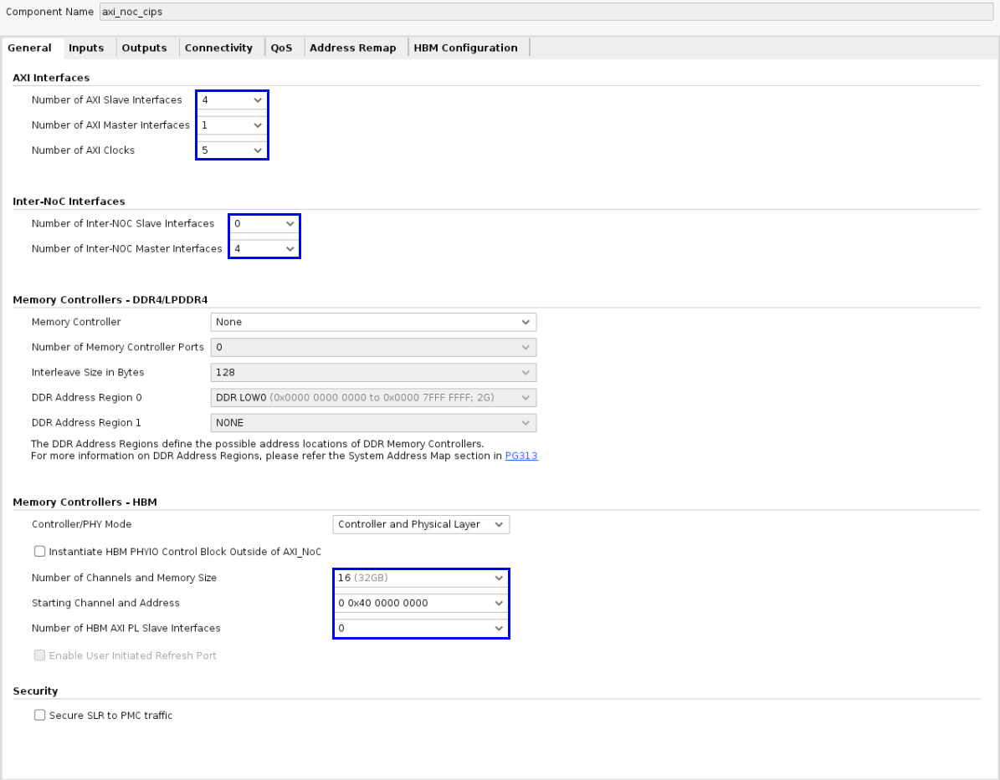
Note: The AMR design does not utilize any of the 64 HBM AXI PL Slave interfaces. These provide direct connections from the PL to the HBM NMUs and can be used to saturate the HBM memory bandwidth.
AXI Interfaces - AXI Slave
AMR connects the following slave interfaces to the CIPS master. The following table shows the AXI slave connections to axi_noc_cips. The frequencies in the following table were chosen to be high enough to meet the QoS requirements on the DDR and HBM interfaces without oversaturating the NoC interfaces. HBM uses two external LVDS clocks operating at 200MHz. Since the HBM is a DDR memory, any user logic trying to saturate the HBM via the HBM AXI PL Slave interfaces should utilize a clock that is 400MHz or more. It is possible for the HBM to saturate the NoC when running at 400MHz and using all 64 256-bit HBM_NMUs (64 NMUs * 12,800MB/s = 819.2 GB/s Total). See the Versal Adaptive SoC Programmable Network on Chip and Integrated Memory Controller 1.0 LogiCORE IP Product Guide (PG313) for more information.
The axi_noc_cips connections outlined in the tables below are further illustrated in the NoC Connection Diagrams.
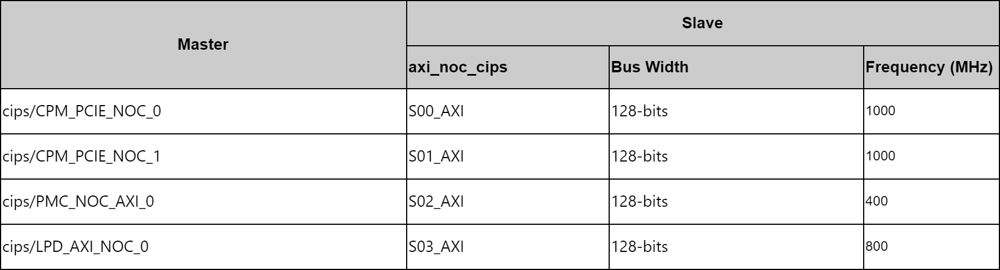
AXI Interfaces - AXI Master
AMR connects the following master interfaces from NoC to PL address space:
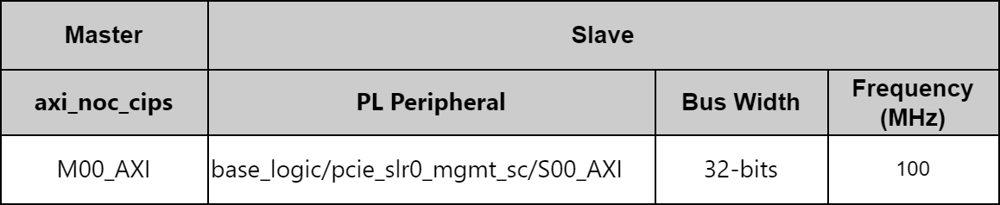
Current Base Design:
M00_AXI: Routes to PF0 address space (16MB) - No hardware IP instantiated, address space reserved
M01_AXI: Routes to PF1 hierarchy (SmartConnect → AXI GPIO test)
These are AXI4-Lite interfaces for register/control access (not high bandwidth data transfer)
AXI Interfaces - AXI Clocks
The AXI NoC IP uses the CIPS clocks to manage clock domain crossings to the NoC. The table below shows clocks connected to axi_noc_cips.
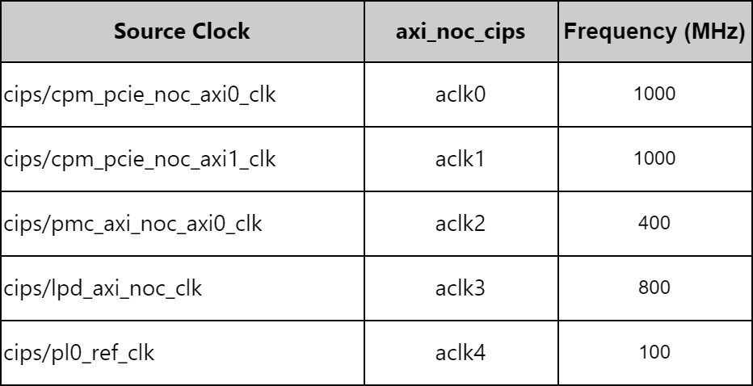
INI Interfaces - INI Slave
No Connections
INI Interfaces - INI Master
AMR V80 connects the following master INI interfaces to the DDR/DIMM memory controllers. The following table shows the axi_noc_cips INI connections to the DDR and DIMM MCs.
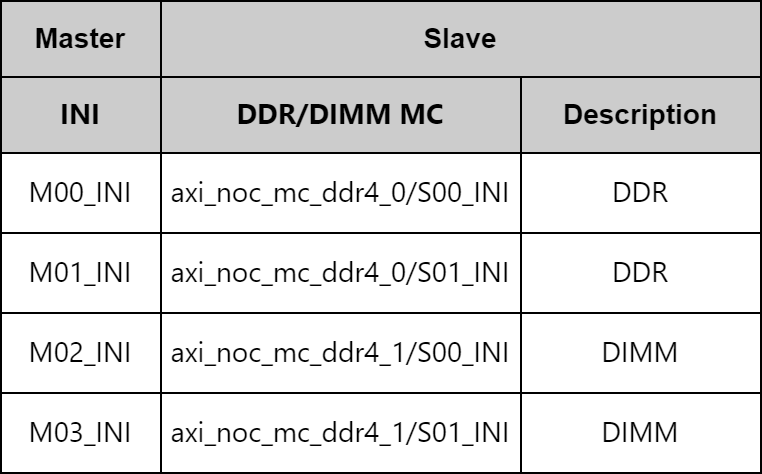
Memory Controllers - DDR4/LPDDR4
No DDR memory controllers are connected to the axi_noc_cips.
Memory Controllers - HBM
AMR axi_noc_cips is configured to use all 32GB of the HBM memory via CIPS connections, but is not using any of the 64 AXI Slave PL interfaces to connect to the HBM. These can be used by the user to get maximum performance to the HBM.
Inputs
As mentioned in the AXI Interfaces Slave section above, there are four CIPS AXI masters connected to the axi_noc_cips slaves.

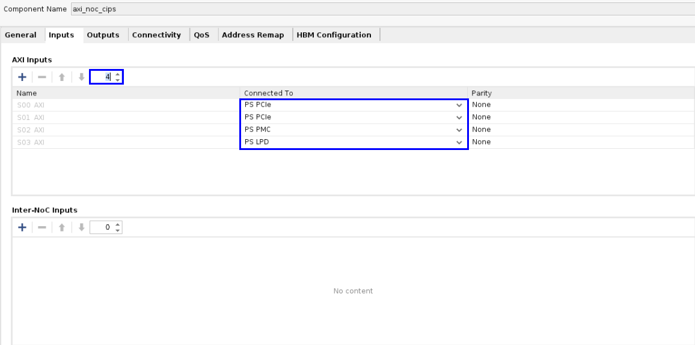
Outputs¶
As mentioned in the AXI Interfaces Master section above, there are four CIPS AXI masters connected to the PL.

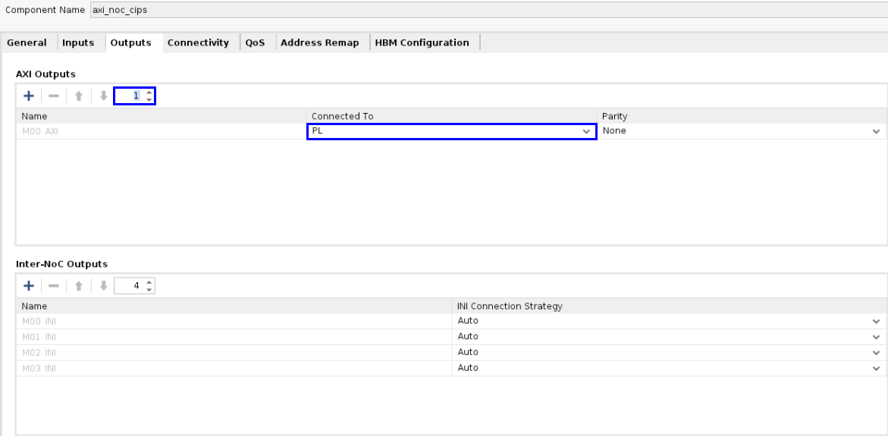
Connectivity¶
By default, there are no connections enabled in the connectivity tab. This tab is a large matrix where a check mark indicates a connection to the input indicated by the row, with the output indicated by the column. Connectivity to the inputs (slave AXI and HBM AXI) must be made to the outputs (master AXI, master INI, and HBM memory controller pseudo channels).
As shown in the first row of the figure below, CIPS S00_AXI (pc_pcie) connects to all of the following:
axi_noc_cips/M00_AXI (which then connects to base_logic/pcie_slr0_mgmt_sc/S00_AXI in the Block Design)
axi_noc_cips/M00_INI (which then connects to axi_noc_mc_ddr4_0/S00_INI of the DDR in the Block Design)
axi_noc_cips/M02_INI (which then connects to axi_noc_mc_ddr4_1/S00_INI of the DIMM in the Block Design)
HBM[0:15] PC0 Port 0 (16 connections total)
HBM[0:15] PC1 Port 2 (16 connections total)
See NoC Connection Diagrams for further details on the non HBM connections.
While the table does not capture the complete connection to the HBM, the same pattern is followed through HBM15 PC0 and HBM15 PC1.

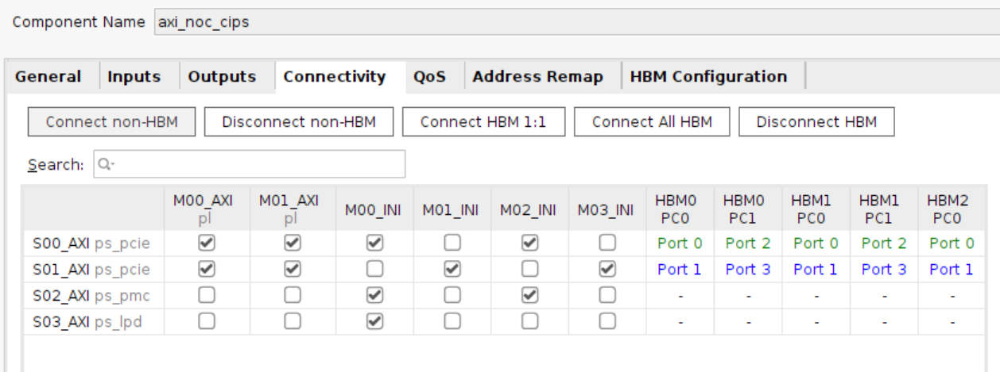
NoC Connection Diagrams
The diagrams below capture the connections of the CIPS NoC interfaces. They do not capture the full AMR design, but capture enough information to illustrate the connections made in the connectivity matrix. The NoC connection from the CIPS interface can be followed to the axi_noc_cips block where the green line indicates the different connections made in the connectivity matrix. It also shows the egress port connections to the PL and DDRMCs.
CPM_PCIE_NOC_0 End-to-End NoC Connection Diagram
In the diagram below, the green lines in the axi_noc_cips block, illustrate the connections from CIPS PCIe (CPM_PCIE_NOC_0 ) to the base logic, DDR, and DIMM. These are the same connections described above for the first row in the connection matrix:
axi_noc_cips/M00_AXI (which then connects to base_logic/pcie_slr0_mgmt_sc/S00_AXI in the Block Design)
axi_noc_cips/M00_INI (which then connects to axi_noc_mc_ddr4_0/S00_INI of the DDR in the Block Design)
axi_noc_cips/M02_INI (which then connects to axi_noc_mc_ddr4_1/S00_INI of the DIMM in the Block Design)

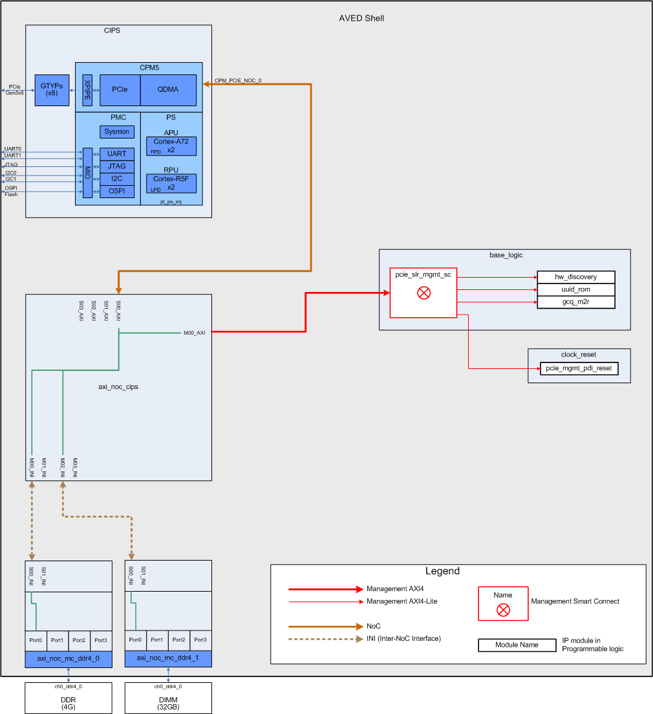
CPM_PCIE_NOC_1 End-to-End NoC Connection Diagram
In the diagram below, the green lines in the axi_noc_cips block, illustrate the connections from CIPS PCIe (CPM_PCIE_NOC_1) to the base logic, DDR, and DIMM.

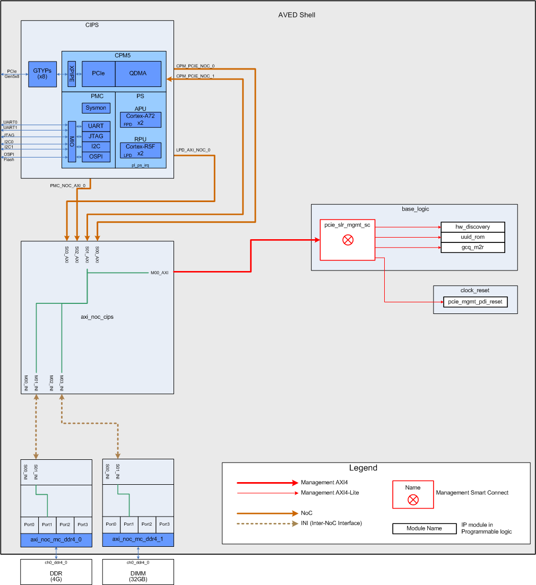
PMC_NOC_AXI_0 End-to-End NoC Connection Diagram
In the diagram below, the green lines in the axi_noc_cips block, illustrate the connections from PMC to DDR and DIMM.

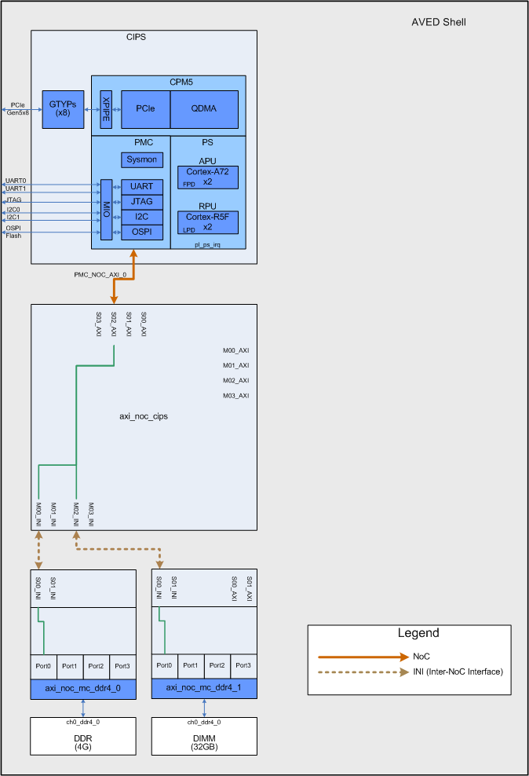
LPD_AXI_NOC_0 End-to-End NoC Connection Diagram
In the diagram below, the green lines in the axi_noc_cips block, illustrate the connections from the RPU to the DDR.

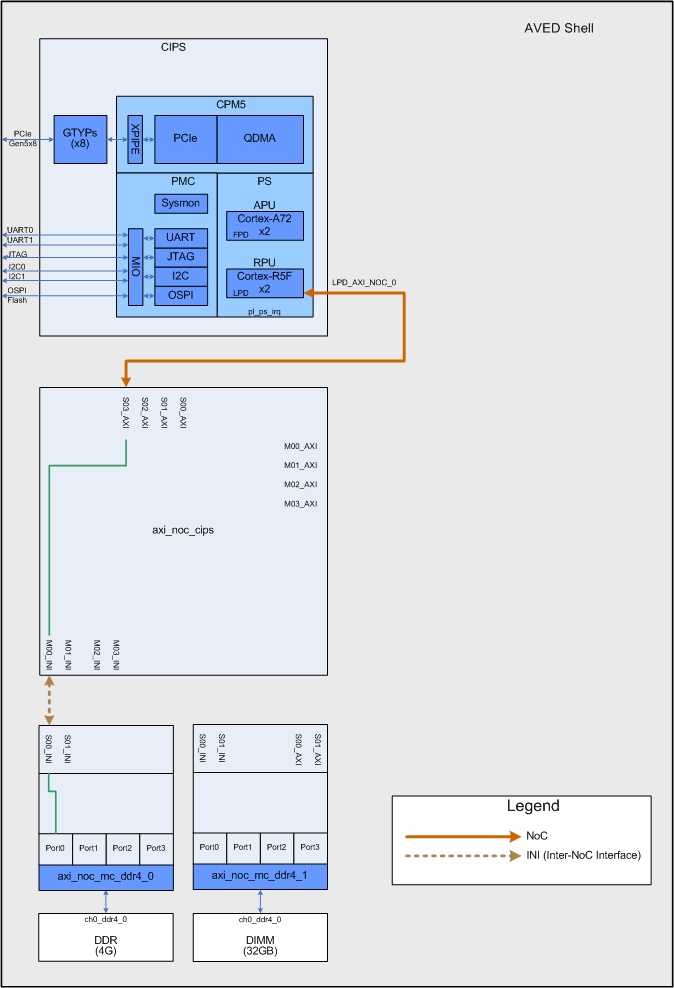
QoS¶
The QoS entries are used by the NoC compiler to determine routing of the NoC traffic through the device meeting the bandwidth requirements. If the requirements cannot be met, the NoC compiler can choose to use different NoC resources (NMU, NSU, NPS, etc.) to achieve the required performance.
Traffic Class
AMR uses the default ‘Best Effort’ setting for all its NoC settings, but other options are available.
Low latency: typically CPU to DDR memory transactions.
Isochronous: real-time deadlines.
Best effort: bulk transfers and not time critical. This is also the only available option for the HBM Read and Write traffic class.
Using ‘Best Effort’, the NoC compiler will work to satisfy the BW and latency requirements of all low latency and Isochronous paths first. After those requirements have been met, the NoC compiler will work to satisfy the BW and latency requirements with paths using best effort. With the ‘Best Effort’ setting, AMR is able to meet its requirements.
Bandwidth
Different NoC paths require different bandwidths. The M0x_AXI bandwidths are requesting 5MB/s because these are AXI4-Lite interfaces that do not require high bandwidth. The M0x_INI interfaces are higher performance than the AXI4-Lite interfaces. These are paths from the PMC, RPU, and Host PCIe that connect to the DDR (M00_INI and M01_INI) and DIMM (M02_INI and M03_INI). A bandwidth of 800MB/s satisfies the AMR bandwidth requirements while not saturating the NoC where multiple paths connect to the same DDR port (DDR and DIMM Port Connections). The HBM paths request 250MB/s on all HBM PCs.
More information can be found here:
https://docs.xilinx.com/r/en-US/am011-versal-acap-trm/Quality-of-Service
https://docs.xilinx.com/r/en-US/pg313-network-on-chip/QoS-Tab?tocId=uWWJ5eZA6Mo5UolhhAKfOg
The following figures show all the connections made to the axi_noc_cips inputs and their desired bandwidths.

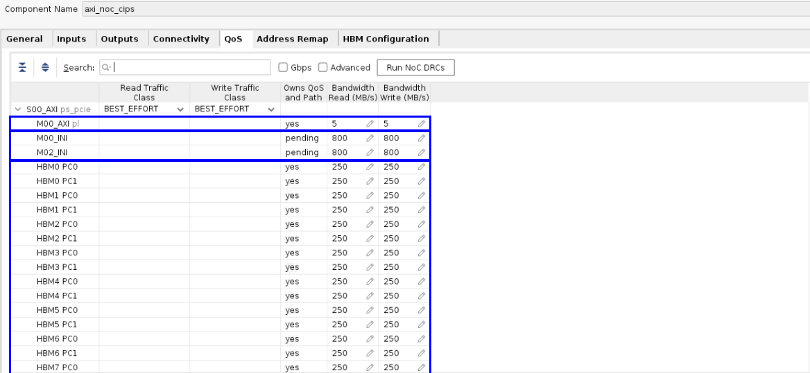
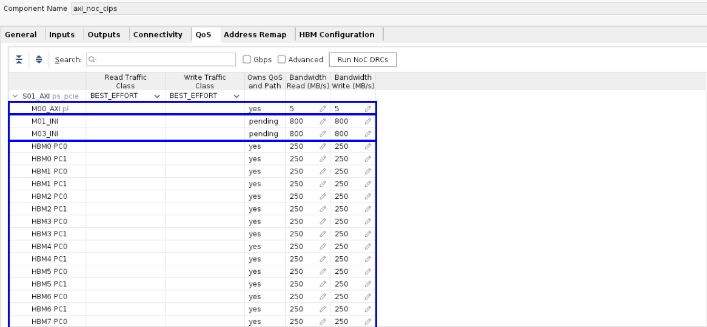
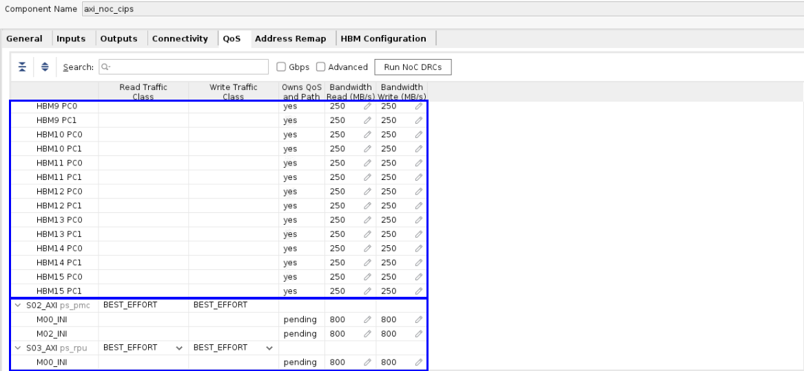
After the implemented design has been opened in AMD Vivado™, the NoC performance can be verified by opening the Vivado Window → NoC window. This will also show the routed NoC paths.
Address Remap¶
The NMU supports address remapping as a way to override the default address map as well as to provide simple address virtualization. AMR uses this feature to remap the PCIe address to the DDR. This allows the PCIe host to have access to the DDR for communication with the RPU.
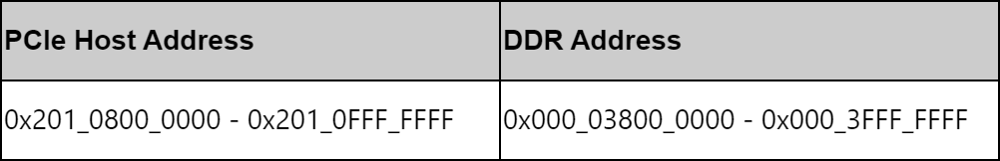
See the Address Re-mapping section of the Versal Adaptive SoC Programmable Network on Chip and Integrated Memory Controller 1.0 LogiCORE IP Product Guide (PG313) for more information.

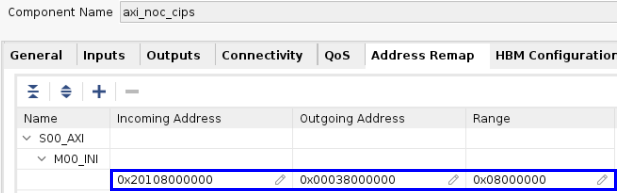
HBM Configuration¶
Channel Configuration
Each HBM channel can be configured with different values ate the users discretion. Since the same traffic pattern is used for all channels, AMR configures all 16 of the HBM channels the same. As a result, there will only be one HBM window to configure when the ‘Configure Channels’ button is selected.
Clocking
The HBM uses two external LVDS clocks operating at 200MHz. These are dedicated clock inputs from banks 800 and 801 of the Versal device. One clock is connected to each HBM stack. The HBM clock source (internal vs external), and IO standard must be the same for both clocks. Configure the HBM clocks as shown below. See the Versal HBM Series - External Reference Clock Design Guidance Article for more information.
The ‘Configure Channels’ button opens a full set of HBM options. The options are explained in detail in the HBM Configuration Tab section of the Versal Adaptive SoC Programmable Network on Chip and Integrated Memory Controller 1.0 LogiCORE IP Product Guide (PG313):

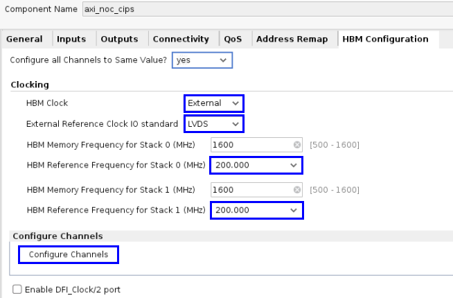
Configure Channels
The address mapping of the HBM uses the default settings and is able to meet performance requirements. Depending on a users PL implementation and performance requirements, the HBM may need to be tuned for better performance. Some guidance is provided below.
HBM Address Map Options
Use Default settings.
Other designs may require different settings to meet performance requirements. More information on HBM addressing and routing can be found in the following links:
The Address Mapping section of the Versal Adaptive SoC Programmable Network on Chip and Integrated Memory Controller 1.0 LogiCORE IP Product Guide (PG313).
The Routing Use Cases and HBM Subsystems section of the Versal Adaptive SoC Programmable Network on Chip and Integrated Memory Controller 1.0 LogiCORE IP Product Guide (PG313).

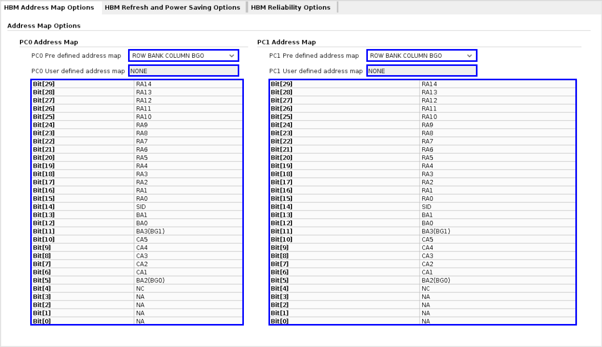
HBM Refresh and Power Saving Options
AMR uses All Bank Refresh mode. Temperature compensated refresh is not enabled because it could require more refreshes and impact performance. Power saving options are not enabled since they affect performance.
For more information see the HBM Refresh and Power Savings Tab of the Versal Adaptive SoC Programmable Network on Chip and Integrated Memory Controller 1.0 LogiCORE IPProduct Guide (PG313).

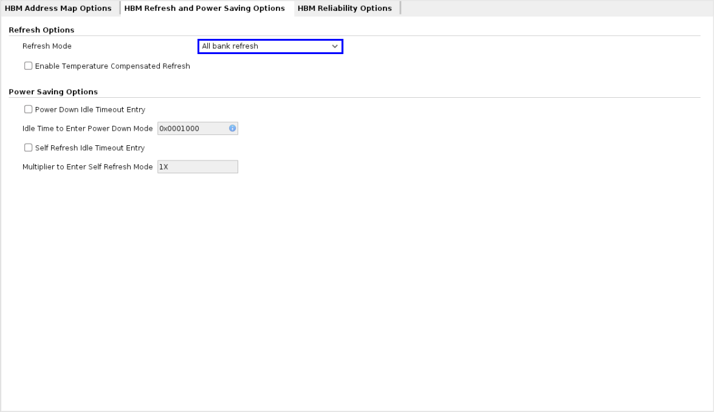
HBM Reliability Options
AMR uses the default settings. Information on these settings can be found in the HBM Reliability Options Tab section of the Versal Adaptive SoC Programmable Network on Chip and Integrated Memory Controller 1.0 LogiCORE IP Product Guide (PG313).
Write Data Mask: This option is enabled and ECC is disabled.
DBI: Dynamic bus inversion is enabled for read and write data.

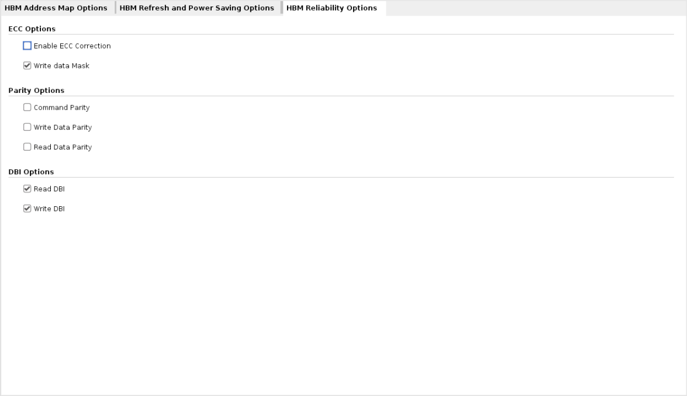
AXI NoC Memory Controller - DDR (axi_noc_mc_ddr4_0)¶
AMR uses a high-efficiency, low-latency integrated DDR memory controller (MC) for general purpose CPU access to the DDR. Through INI connections, the CIPS PCIe Host, PMC, and RPU can access the DDR.
{kind=link}
GUI Configuration of axi_noc_mc_ddr4_0¶
For AMR, the NoC DDRMC configuration may be specified in a TCL file or through the GUI.
```tcl
# Create instance: axi_noc_mc_ddr4_0, and set properties
set axi_noc_mc_ddr4_0 [ create_bd_cell -type ip -vlnv xilinx.com:ip:axi_noc axi_noc_mc_ddr4_0 ]
set_property -dict [list \
CONFIG.CONTROLLERTYPE {DDR4_SDRAM} \
CONFIG.MC_CHAN_REGION1 {DDR_CH1} \
CONFIG.MC_COMPONENT_WIDTH {x16} \
CONFIG.MC_DATAWIDTH {72} \
CONFIG.MC_DM_WIDTH {9} \
CONFIG.MC_DQS_WIDTH {9} \
CONFIG.MC_DQ_WIDTH {72} \
CONFIG.MC_INIT_MEM_USING_ECC_SCRUB {true} \
CONFIG.MC_INPUTCLK0_PERIOD {5000} \
CONFIG.MC_MEMORY_DEVICETYPE {Components} \
CONFIG.MC_MEMORY_SPEEDGRADE {DDR4-3200AA(22-22-22)} \
CONFIG.MC_NO_CHANNELS {Single} \
CONFIG.MC_RANK {1} \
CONFIG.MC_ROWADDRESSWIDTH {16} \
CONFIG.MC_STACKHEIGHT {1} \
CONFIG.MC_SYSTEM_CLOCK {Differential} \
CONFIG.NUM_CLKS {0} \
CONFIG.NUM_MC {1} \
CONFIG.NUM_MCP {4} \
CONFIG.NUM_MI {0} \
CONFIG.NUM_NMI {0} \
CONFIG.NUM_NSI {2} \
CONFIG.NUM_SI {0} \
] $axi_noc_mc_ddr4_0
```
General¶
The General tab allows the number of AXI master and slave interfaces, INI master and slave interfaces, and Integrated memory controller connections to be specified. The settings are explained below.

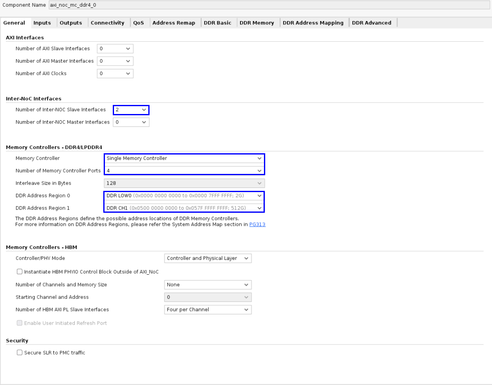
AXI Interfaces
AXI Slave - No Connections
AXI Master - No Connections
INI Interfaces
INI Slave
AMR connects the following master interfaces to the DDRMC. The following table shows the INI master connections to axi_noc_mc_ddr4_0.
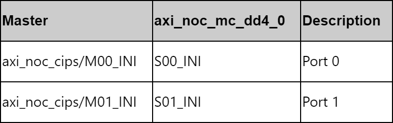
M00_INI connects to the CIPS PCIe, PMC, and RPU through the axi_noc_cips.
M01_INI connects to the CIPS RPU through the axi_noc_cips.
INI Master - No Connections
Memory Controllers - DDR4
AMR uses a single memory controller with four ports. Access to the 4GB DDR is design-specific as defined in the Discrete DDR Diagram. There are two 2G address ranges that address this DDR:
DDR LOW0 - 0x000_0000_0000 - 0x000_7FFF_FFFF
DDR CH1 - 0x500_8000_0000 - 0x500_FFFF_FFFF
Memory Controllers - HBM
N/A
Inputs¶
As mentioned in the INI Interfaces section above, there are two CIPS INI masters connected to the axi_noc_mc_ddr4_0 slaves.

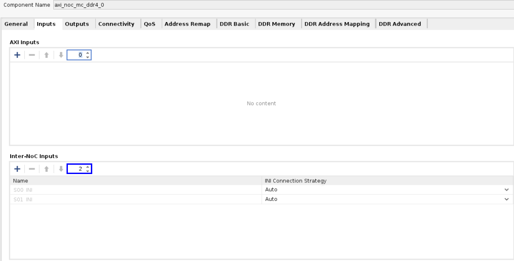
Connectivity¶
By default, there are no connections enabled in the connectivity tab. Connectivity between the inputs (slave INI) and the outputs (DDR Ports) is established through checking boxes in a matrix, where a check mark indicates a connection between an input (indicated by the row) and an output (indicated by the column).
The figure below captures the connectivity enabled in AMR:
S00_INI (CIPS PCIe Host, PMC and RPU) connects to port 0 of the MC.
S0I_INI (CIPS PCIe Host) connects to port 1 of the MC.

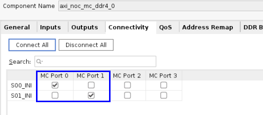
DDR and DIMM Port Connections
The diagram below shows the DDRMC access paths between CIPS and the DDRMC port through axi_noc_cips.
Note: Multiple connections are made to DDR Port 0 and DIMM Port 0.
CPM_PCIE_NOC_0
CPM_PCIE_NOC_1
PMC_NOC_AXI_0
LPD_AXI_NOC_0
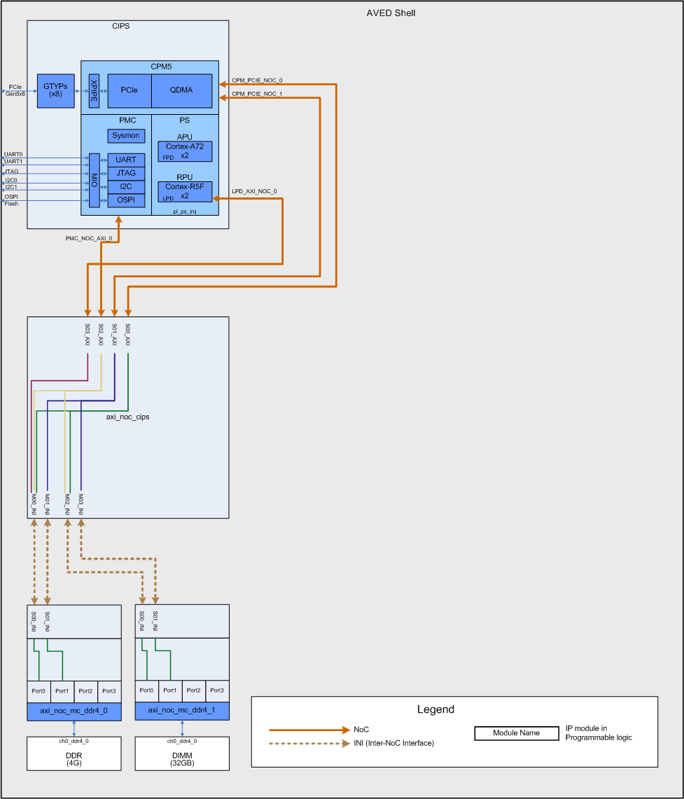
QoS¶
The QoS entries are used by the NoC compiler to determine routing of the NoC traffic through the device, meeting the bandwidth requirements. If the requirements cannot be met, the NoC compiler can choose to use different NoC resources (NMU, NSU, NPS, etc.) to achieve the required performance.
Traffic Class
AMR uses the default ‘Best Effort’ setting for all its NoC settings, but other options are available.
Low latency: typically CPU to DDR memory transactions.
Isochronous: real-time deadlines.
Best effort: bulk transfers and not time critical. This is also the only available option for the HBM Read and Write traffic class.
Using ‘Best Effort’, the NoC compiler will work to satisfy the BW and latency requirements of all Low Latency and Isochronous paths first. Then after those requirements have been met, the NoC compiler will work to satisfy the BW and latency requirements with paths using best effort. With the ‘Best Effort’ setting, AMR is able to meet its requirements.
Bandwidth
The desired bandwidth of the transactions. The MC ports are requesting 800MB/s for transactions between the PMC, RPU, and Host PCIe and the DDR (M00_INI and M01_INI).
More information can be found in the following:
The Quality of Service section of the Versal Adaptive SoC Technical Reference Manual (AM011).
The QoS tab section of the Versal Adaptive SoC Programmable Network on Chip and Integrated Memory Controller 1.0 LogiCORE IP Product Guide (PG313).
The following figure shows all the connections made to the axi_noc_mc_ddr4_0 inputs and their desired bandwidths.

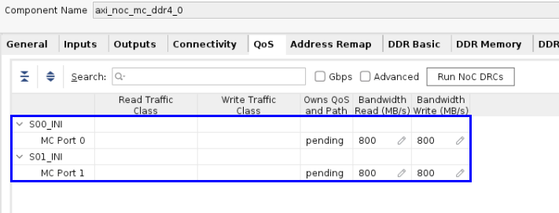
After the implemented design has been opened in Vivado, the NoC performance can be verified by opening the Vivado Window → NoC window. This will also show the routed NoC paths.
DDR Basic¶
Information on the DDR Memory options is found 7in the Configuring the Memory Controller section of the Versal Adaptive SoC Programmable Network on Chip and Integrated Memory Controller 1.0 LogiCORE IP Product Guide (PG313).
AMR supports DDR4 running at 200MHz.

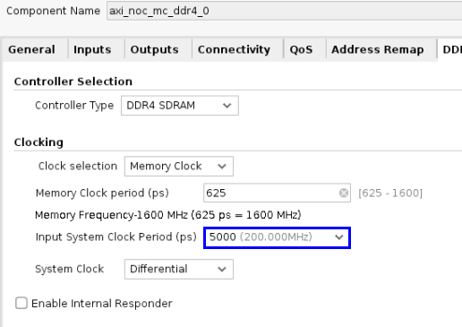
Clocks
The AXI NoC IP uses the DDR board clock to manage the clock domain crossings between the NoC and DDR.
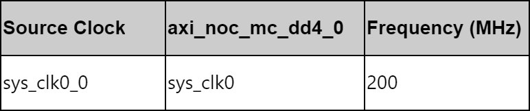
DDR Memory¶
AMR supports a 4GB memory. Choose the settings below for the proper part and speed grade.

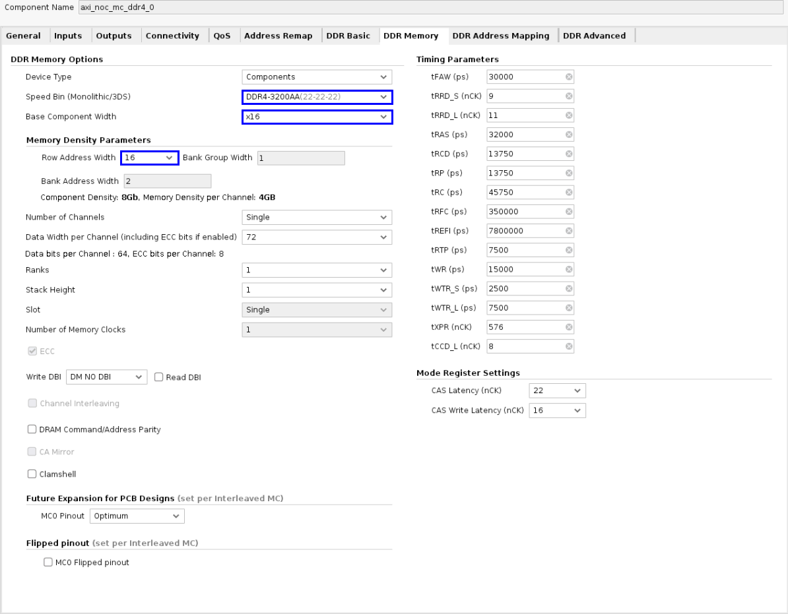
AXI NoC Memory Controller - DIMM (axi_noc_mc_ddr4_1)¶
AMR V80 uses a high-efficiency, low-latency integrated DDR memory controller (MC) that can be used for general purpose CPU access and other traditional FPGA applications such as video or network buffering. Through INI connections from CIPS, CIPS PCIe Host and PMC can access the DIMM. Each input connects to a separate MC port. As shown in the QoS tab, the NoC BW is not saturated, so additional connections could be made to the ports if desired.
Ports¶
There are a minimal number of ports on axi_noc_mc_ddr4_1 as shown in the following figure.

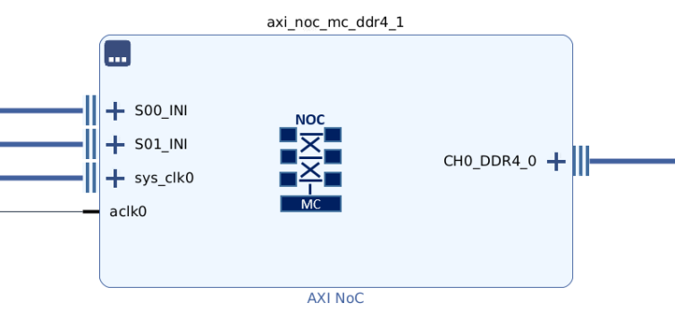
GUI Configuration of axi_noc_mc_ddr4_1¶
For AMR, the NoC DDRMC configuration may be specified in a TCL file or through the GUI.
```tcl
# Create instance: axi_noc_mc_ddr4_1, and set properties
set axi_noc_mc_ddr4_1 [ create_bd_cell -type ip -vlnv xilinx.com:ip:axi_noc axi_noc_mc_ddr4_1 ]
set_property -dict [list \
CONFIG.CONTROLLERTYPE {DDR4_SDRAM} \
CONFIG.MC0_CONFIG_NUM {config21} \
CONFIG.MC0_FLIPPED_PINOUT {false} \
CONFIG.MC_CHAN_REGION0 {DDR_CH2} \
CONFIG.MC_COMPONENT_WIDTH {x4} \
CONFIG.MC_DATAWIDTH {72} \
CONFIG.MC_INIT_MEM_USING_ECC_SCRUB {true} \
CONFIG.MC_INPUTCLK0_PERIOD {5000} \
CONFIG.MC_MEMORY_DEVICETYPE {RDIMMs} \
CONFIG.MC_MEMORY_SPEEDGRADE {DDR4-3200AA(22-22-22)} \
CONFIG.MC_NO_CHANNELS {Single} \
CONFIG.MC_PARITY {true} \
CONFIG.MC_RANK {1} \
CONFIG.MC_ROWADDRESSWIDTH {18} \
CONFIG.MC_STACKHEIGHT {1} \
CONFIG.MC_SYSTEM_CLOCK {Differential} \
CONFIG.NUM_CLKS {1} \
CONFIG.NUM_MC {1} \
CONFIG.NUM_MCP {4} \
CONFIG.NUM_MI {0} \
CONFIG.NUM_NMI {0} \
CONFIG.NUM_NSI {2} \
CONFIG.NUM_SI {0} \
] $axi_noc_mc_ddr4_1
```
General¶
The General tab allows the number of AXI master and slave interfaces, INI master and slave interfaces, and integrated memory controller connections to be specified. The settings are explained below.

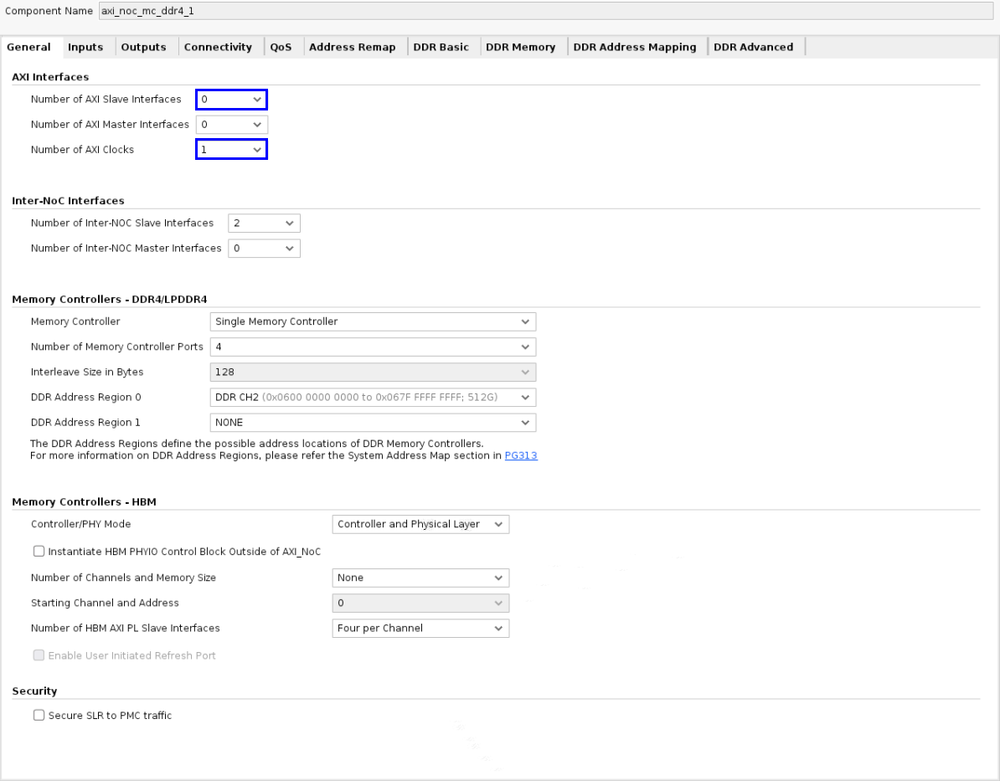
AXI Interfaces
AXI Slave - No Connections
AXI Master - No Connections
Clocks
The AXI NoC IP uses the DDR board clock, user clock, and CIPS PL clock to manage the clock domain crossings between the NoC and DIMM.
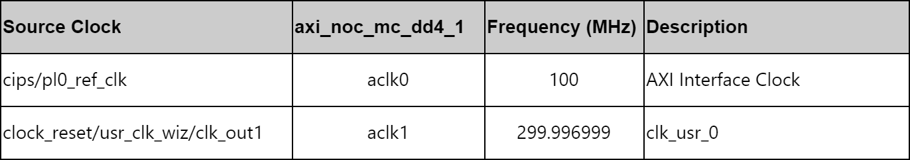
INI Interfaces
INI Slave
AMR V80 connects the following master INI interfaces to the memory controller.
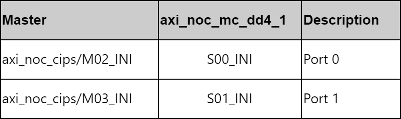
M02_INI connects to the CIPS PCIe and PMC through the axi_noc_cips.
M3_INI connects to the CIPS PCIe through the axi_noc_cips.
INI Master - No Connections
Memory Controllers - DDR4
AMR V80 uses a single memory controller with four ports. Access to the 32GB DIMM is design specific as defined in the DIMM Diagram. There is one address range that addresses this DDR:
DDR CH2 - 0x600_0000_0000 - 0x67F_FFFF_FFFF
Memory Controllers - HBM
N/A
Inputs¶
As mentioned in the AXI Interfaces and INI Interfaces section above, there are two CIPS INI masters connected to the axi_noc_mc_ddr4_1 slaves.

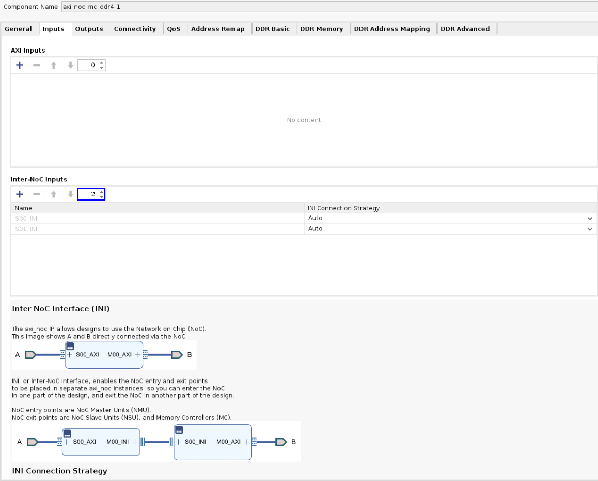
Connectivity¶
By default, there are no connections enabled in the connectivity tab. Connectivity between the inputs (slave INI) and the outputs (DDR Ports) is established through checking boxes in a matrix, where a check mark indicates a connection between an input (indicated by the row) and an output (indicated by the column).
The figure below captures the connectivity enabled in AMR:
S00_INI (CIPS PCIe Host and PMC) connects to port 0 of the MC.
S0I_INI (CIPS PCIe Host) connects to port 1 of the MC.

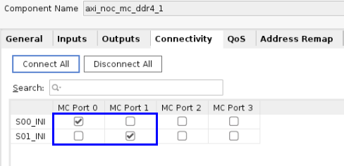
DDRMC Access
The diagram below shows the V80 DIMM DDRMC port access paths with CIPS.
CPM_PCIE_NOC_0
CPM_PCIE_NOC_1
PMC_NOC_AXI_0

QoS¶
The QoS entries are used by the NoC compiler to determine routing of the NoC traffic through the device meeting the bandwidth requirements. If the requirements cannot be met, the NoC compiler can choose to use different NoC resources (NMU, NSU, NPS, etc) to achieve the required performance.
Traffic Class
Normally, the best effort class is chosen, but other options are available. AMR V80 uses best effort for all its NoC settings. With this setting, the NoC compiler will work to satisfy the BW and latency requirements after any paths with low latency and Isochronous have been met.
Low latency: typically CPU to DDR memory transactions.
Isochronous: real-time deadlines.
Best effort: bulk transfers and not time critical.
Bandwidth
The desired bandwidth of the transactions. The MC ports are requesting 800MB/s for transactions between the PMC, RPU, and Host PCIe and the DDR (M00_INI and M01_INI).
More information can be found here:
The Quality of Service section of the Versal Adaptive SoC Technical Reference Manual (AM011).
The QoS tab section of the Versal Adaptive SoC Programmable Network on Chip and Integrated Memory Controller 1.0 LogiCORE IP Product Guide (PG313).
The following figure shows all the connections made to the axi_noc_mc_ddr4_1 inputs and their desired bandwidths.

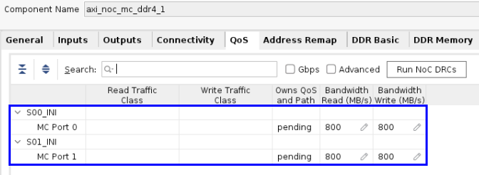
After the implemented design has been opened in Vivado, the NoC performance can be verified by opening the Vivado Window → NoC window. This will also show the routed NoC paths.
DDR Memory¶
AMR supports a 32GB DIMM memory. Choose the settings below for the proper part and speed grade.
These options are enabled for future growth:
DRAM Command/Address Parity- Versal Adaptive SoC Programmable Network on Chip and Integrated Memory Controller 1.0 LogiCORE IP Product Guide (PG313)
Future Expansion for PCB designs - Versal Adaptive SoC Programmable Network on Chip and Integrated Memory Controller 1.0 LogiCORE IP Product Guide (PG313).

DDR Address Mapping¶
In order to achieve maximum DIMM performance, the predefined address map may need to be modified based on the user logic traffic pattern. More information can be found in the DRAM Address Mapping section of the Versal Adaptive SoC Programmable Network on Chip and Integrated Memory Controller 1.0 LogiCORE IP Product Guide (PG313).